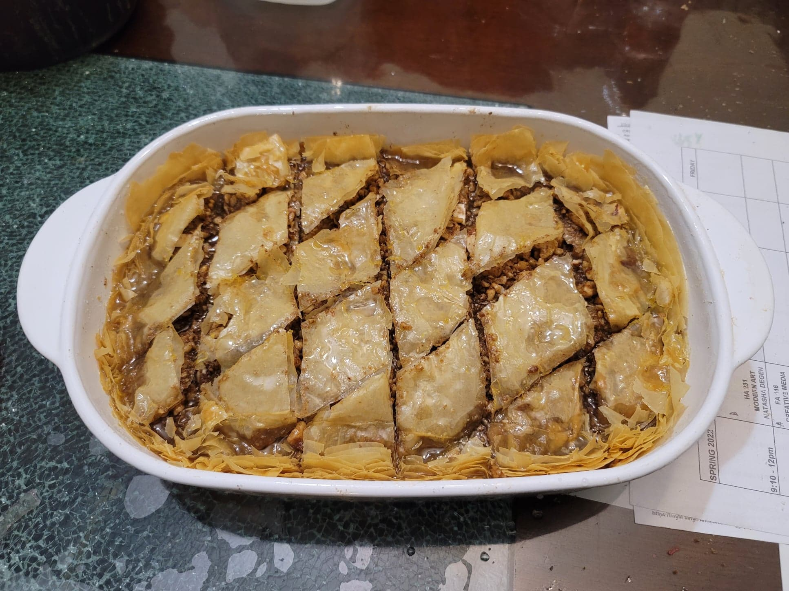

Baklava

Ingredients:
Baklava:
- 25-30 sheets Phyllo dough
- 1 lb Walnuts, or mix of any nuts
- 2 tsp Cinnamon
- 2 tsp Ground cloves
- 1 cup Butter, melted
Syrup:
- 2 1/2 cups Sugar
- 1 3/4 cup Water
- Zest of 1 Lemon
- 1 Cinnamon stick
- 1/4 cup Honey
Instructions:
- Preheat an oven to 300 degrees Fahrenheit.
- Place the nuts into a food processor with the cinnamon and cloves. Pulse until the nuts reach a finely chopped consistency.
- Brush the inside of a large baking dish with butter. Place 2 sheets of phyllo dough and then brush the sheets of phyllo with more butter. Place 2 more sheets of phyllo and butter and then repeat until you have placed a total of 8-10 sheets of phyllo.
- Once you have placed 8-10 sheets of phyllo and butter, start to place the filling. Place a few spoonfuls of the nut mixture, followed by another 2 sheets of phyllo and butter. Repeat this pattern until finished with the nut mixture. There should be about 8-10 more sheet of phyllo left at this point.
- For the rest of the phyllo sheets, repeat the pattern of 2 sheets and then butter. Once the phyllo is finished, use a wet knife to immediately cut the baklava into diamonds. Sprinkle the baklava with a little cold water and place into the oven to let cook until golden, about 90-120 minutes.
- While the baklava cooks, prepare the syrup. Place all the syrup ingredients except for the honey into a small saucepan. Bring to a boil and let boil for 2 minutes. Then remove from heat and mix in the honey. Transfer to a fridge to cool while the baklava cooks.
- Once the baklava is finished, remove from the oven. Slowly pour the cool syrup over the hot baklava. Make sure to coat the baklava evenly. Allow the baklava to cool completely and absorb the rest of the syrup. Serve at room temperature.